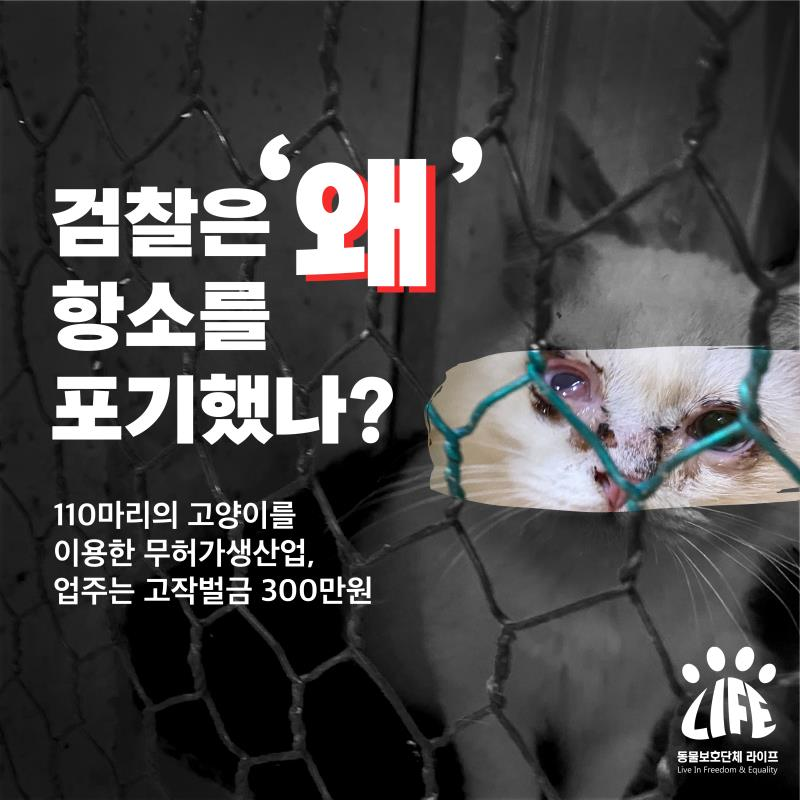

Why did the 110-cat factory < prosecutors abandon their appeals? >
Registration Date Author Life Attachment Notice_and_press3_02.jpg {kind=link}
Why did the < prosecutor abandon the appeal?>
Last May, the animal rights group Life announced that
More than 110 cat factories were identified,
The owner was accused by prosecutors of violating the Animal Protection Act and the
Veterinarian Act.
And on January 26 of this year,
In the Court's 1st Sentencing
All of the defendant's charges were acknowledged.
However, the 1st Trial Court
1 year of probation in April for the employer,
He was fined 3 million won.
Life cannot agree with this ruling.
Decide to submit an appeal opinion to the prosecutor, and
From January 27 to the citizens
Please join us in submitting an Appeal Opinion
Appealed.
Time was running out, but
Many citizens are angry,
Because He East Sea Walk Together
1,949 opinion sheets were gathered.
Also for the Veterinarian Society,
Take a personal statement from the veterinarian
Enclosed together last Friday (29 January)
Mailed to Changwon Ji Sword.
Observe the statutory appeal deadline a week after sentencing
Although the appeal opinion was well communicated to the prosecutor,
Prosecutors say shortly after the court's 1-trial sentencing is over.
that you have already waived your appeal
that you have gone through administrative procedures.
In hindsight, I found out.
I learned of this
After several days of call attempts
I barely knew.
In a call with the prosecutor, the prosecutor in charge immediately after the 1-trial sentencing
The reason for the waiver of the appeal is
The old sentence of the prosecutor and the sentence of the court
It is said that the gap difference was not large.
So what was the prosecutor's old sentence?
Even when asked by Life to let me know,
The only answer that I couldn't tell you was back.
For what
Didn't the prosecution appeal the court's sentence?
Prosecutors give this or that reason,
The reality is that the victim was an animal.
Isn't that the biggest reason?
Not a cognitive case of an investigative agency
It was a case that was filed by an animal rights organization.
Even once before the waiver of the appeal
If only I had listened to the accuser's opinion.
Could it have been possible to avoid this regrettable decision?
I feel a great deal of regret, resentment, and resentment.
The prosecutors, as well as the courts and this society
Never again to animal abusers
I hope that there will be no tolerance.
Animal Protection Group Life
Gimhae Cat Factory Incident
I'm not going to finish it this way.
We will take another legal action,
We'll keep you up to date with the news.
#김해고양이공장
#동물보호단체라이프